1 Visualisation using ggplot2
1.1 Introduction to tidyverse
Now that you’re comfortable with R, and specifically with the concept of data.frame objects, we can begin to really start unlocking the power of R for analysing complex data sets. The ability to work with and visualise data frames is one of the key reasons why R is so popular among statisticians and data scientists. Although a vast amount can be achieved using base R functionality, one of R’s other key strengths is the vast array of packages that it supports, which add a rich variety of additional functionality to R.
A suite of packages that are fast becoming de rigueur for performing myriad data science tasks is known as the tidyverse. These packages provide powerful functions for doing visualisation and manipulation of complex data sets. In this workshop we will introduce key tidyverse packages, and show how they can be used to efficiently process and visualise complex data sets.
tidyverse packages
The tidyverse is a suite of packages, including e.g. tidyr, dplyr, ggplot2, purrr, tibble and readr. Although these packages can each be installed and loaded separately, they are designed to work together, and as such will simply install and load the tidyverse directly, rather than worry too much about which functions belong to which packages.
As usual, if you want to install tidyverse, use:
and once installed, it can be loaded using:
in the usual way. Let’s start with a motivating example.
1.2 Gapminder
Professor Hans Rosling has made a name for himself in the field of data visualisation with his groundbreaking Gapminder project.
For a slightly longer presentation, his TED talk on global development has been watched over 11 million times. If you have 20 minutes, it can be found here, and is well worth a watch!
The Gapminder website provides really informative interactive visualisations for many fascinating data sets. In this practical we will explore how to use R to try to recreate something similar to the types of visualisation that Gapminder provides, and see how high-end R packages—such as ggplot2—have been developed that provide a systematic and flexible way to generate complex plots / visualisations. Our aim for this workshop is to emulate the plot in Figure 1.1.
Figure 1.1: Life expectancy against GDP—screenshot from Gapminder project
1.3 Introduction to ggplot2
R has very powerful and flexible plotting capabilities, that can be used to produce high-quality, bespoke visualisations. The downside is that the syntax can be verbose, so for complex plots it can be time consuming to code up.
A general package that has been developed for visualisation of complex data sets is called ggplot2. This provides a wide variety of standard plot types and flexible customisation options, with a unifying syntax. In this part of the module, we will introduce ggplot2 and illustrate its use on a range of real-world examples.
ggplot2.
We will introduce some example code first, and then talk through it. First we load the tidyverse (of which ggplot2 is included—you could just load ggplot2 if you prefer).
Let’s begin by exploring the iris data set, which gives the measurements in centimeters of the variables sepal length and width, and petal length and width, respectively, for 50 flowers from each of 3 species of iris. The species are Iris setosa, versicolor, and virginica. This data set is available as part of the base R package. Let’s have a look at the data:
## Sepal.Length Sepal.Width Petal.Length Petal.Width Species
## 1 5.1 3.5 1.4 0.2 setosa
## 2 4.9 3.0 1.4 0.2 setosa
## 3 4.7 3.2 1.3 0.2 setosa
## 4 4.6 3.1 1.5 0.2 setosa
## 5 5.0 3.6 1.4 0.2 setosa
## 6 5.4 3.9 1.7 0.4 setosaYou’ll notice that the data is in tidy format. Specifically, a tidy data set is one in which:
- rows contain different observations;
- columns contain different variables;
- cells contain values.
We will discuss tidy data in more detail in a later section. For the time being, as a quick example, let’s produce a plot of Sepal.Width against Sepal.Length, but with points coloured by Species:
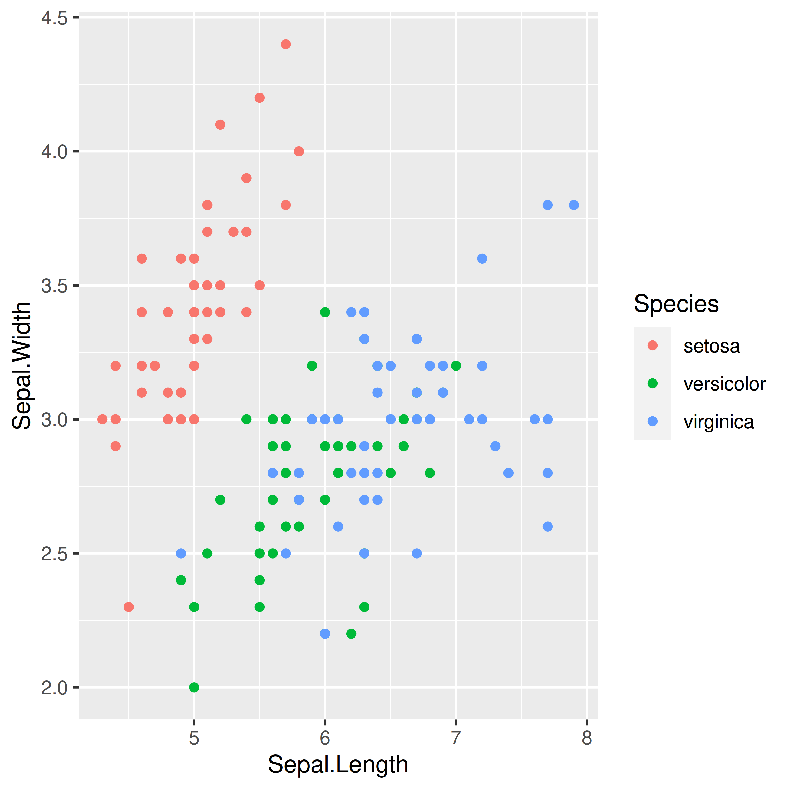
Notice that we had to do little physical manipulation of the plot. We didn’t have to choose how to position legends, or manually subset the data to plot the different points, or choose the colours; the package took care of all of these things.
ggplot2 is the Data Visualisation Cheat Sheet. Another fantastic resource, is the R Graphics Cookbook by Winston Chang, which has a free online version, or a physical book that you can buy.
So, how does it work? ggplot2 is based on a book called the Grammar of Graphics by Leland Wilkinson—hence the name gg-plot! The ethos of ggplot2 is that plots can be broken down into different features, most notably:
- data;
- aesthetic mapping;
- geometric object;
- scales;
- faceting;
- statistical transformations;
- coordinate system;
- position adjustments.
Perhaps the easiest way to explain some of these concepts is to work through our examples step-by-step. We will focus on the main components marked in bold above. Let’s start with the scatterplot example first, and examine the first part of the code:
This sets up the plot. The first argument to the ggplot function is the data, which here is the iris data set.
ggplot() requires data.frame (or tibble1) objects. It is designed for plotting statistical data sets. Never fear, most R objects can be manipulated into data.frames for plotting if required. (See next session on data wrangling for more on this.)
Notice that only an empty plot has been drawn so far, there are no points present. This is because we haven’t told ggplot2 what type of plot we want. We do this by specifying a geom.
1.3.1 Geoms
A geom defines the type of plot we want. In this case we want a scatterplot, which can be defined by the geom_point() function. Geoms can be layered, allowing us to built up complex plots sequentially. Common geoms are:
geom_point()geom_line()geom_histogram()geom_density()geom_bar()geom_violin()
Please see the Data Visualisation Cheat Sheet for more examples.
1.3.2 Aesthetics
The aes(x = Sepal.Length, y = Sepal.Width, colour = Species) part sets the aesthetics, which here are added as an argument to the geom_point() function. These define how the data are mapped onto the visual aesthetics of the plot. Here we are setting the x coordinates to be Sepal.Length, the y coordinates to be Sepal.Width, and the colour of the characters to be related to Species. In general, aesthetics include:
- position;
- colour (border or line colour);
- fill (inside colour);
- shape;
- linetype;
- size.
$ operator to extract columns. This makes ggplot2 code a lot clearer. R knows to look for the Sepal.Length and Sepal.Width columns in the iris data, because we have told ggplot() which data set to operate on.
1.3.3 Building up plots
Note that ggplot2 builds plots up by adding together components. There are lots of ways to do this. Here I have set up “global” options for the plot using the ggplot() function. I then add (+) to this the type of plot I want i.e. + geom_point(aes(x = Sepal.Length, y = Sepal.Width, colour = Species)) (in this case including the aesthetics in the geom_* call). The addition sign is important. If I want to split the function over multiple lines, make sure the + sign is at the end of each line, so R knows that the plot is not complete at the point.
Putting all this together we have:
Nice! With one tiny function we have added colours and legends. All neatly formatted to work together in one plot!
geom accepts only a subset of all aesthetics. Information on these can be found in the help files for each geom_* type, or see also the Data Visualisation Cheat Sheet. Most of these are fairly obvious. For example, a scatterplot requires both x and y aesthetics as a minimum. A kernel density geom e.g. geom_density(), requires only an x aesthetic (we will come back to this shortly). Some aesthetics do not make sense for certain types of geom; for example, it makes sense that a shape aesthetic can be added to geom_point() but not to geom_line(). Conversely, adding a linetype aesthetic to geom_line() makes sense, but not to geom_point().
1.3.4 Labels and titles
Labels and titles can be added fairly easily, using the xlab(), ylab() and ggtitle() functions, e.g.
ggplot(iris) +
geom_point(aes(x = Sepal.Length, y = Sepal.Width, colour = Species)) +
xlab("Sepal Length (cm)") + ylab("Sepal Width (cm)") +
ggtitle("Scatterplot of sepal lengths and widths")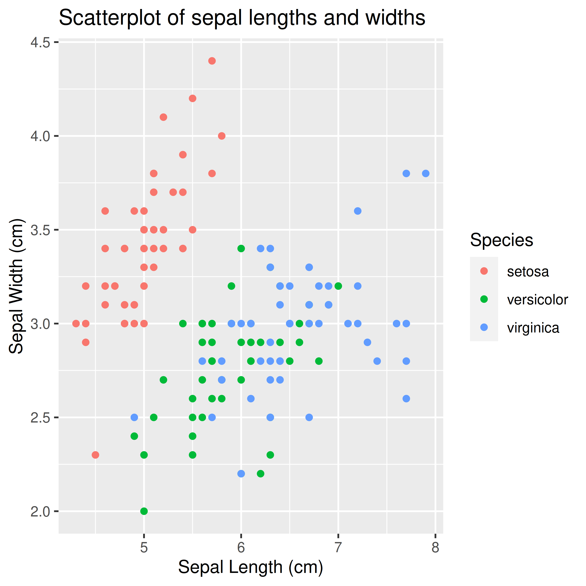
Sepal.Length values for each species, together on one plot. One way that we can do this is to use a kernel density plot (or alternatively a histogram) of the data. Produce a plot containing three density plots for Sepal.Length, stratified by Species. Hint: use the geom_density() geom, which requires an x aesthetic only, and set the colour aesthetic as before.
colour aesthetic with a fill aesthetic. What happens?
alpha channel to this plot. An alpha channel controls the degree of opacity for the colours, where alpha = 0 corresponds to complete transparency, and alpha = 1 to complete opacity. Note that we do not want to map the alpha channel to an aesthetic here, rather we want all fill colours to be, say 50% transparent. We can therefore add an alpha = 0.5 argument to the geom_density() function. What happens?
1.3.5 Aside: aesthetics vs. generic options
As a quick aside, notice that when we set the alpha channel above, we did not set it as an aesthetic, rather we set it as a generic option which was applied to all components of the plot. Perhaps the easiest way to visualise this difference, is to consider different colour options. Take a look at these next pieces of code and try to understand the differences between them.

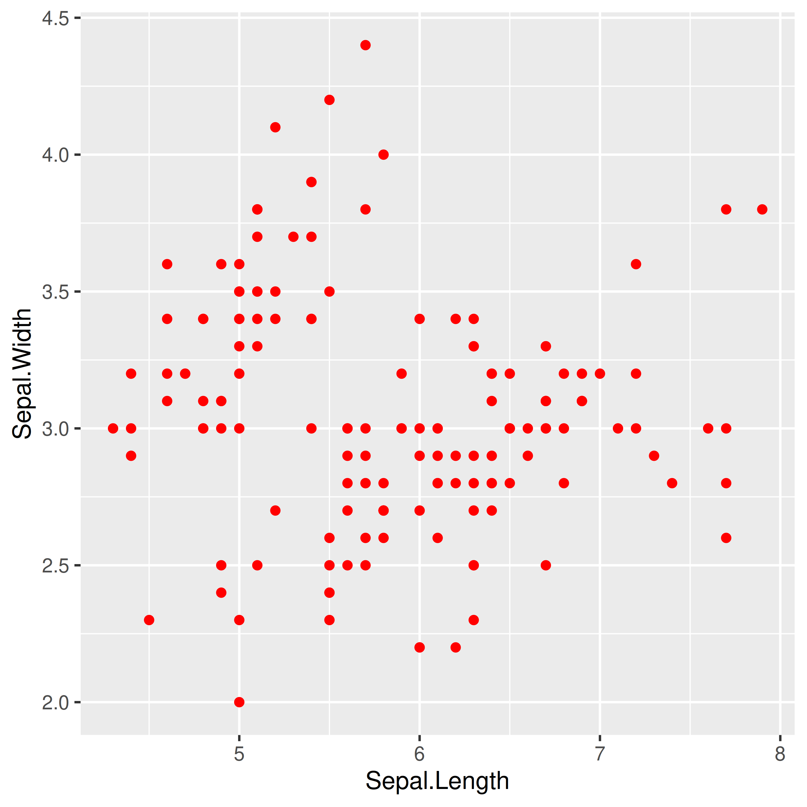
1.3.6 Faceting
Another really useful feature of ggplot is the ability to use faceting to display sub-plots according to some grouping variable. For example, let’s assume that we want to produce separate plots of sepal length vs. width for each of the three species of iris. We can do this using faceting:
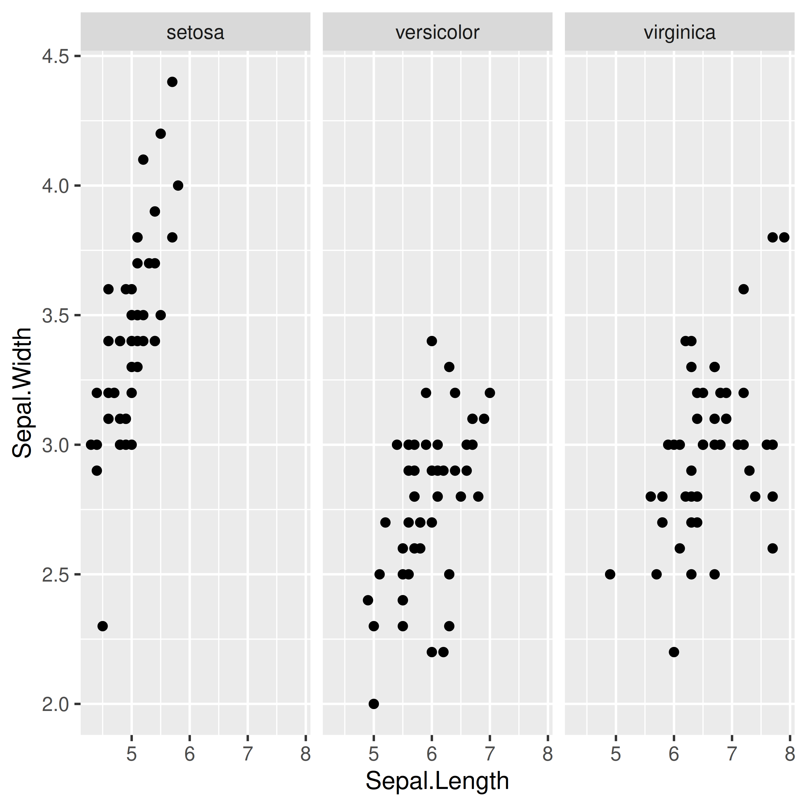
Neat eh? Note that we can also use different aesthetics within the facets. For example, we could also add a colour aesthetic e.g.
ggplot(iris) +
geom_point(aes(x = Sepal.Length, y = Sepal.Width, colour = Species)) +
facet_wrap(~ Species)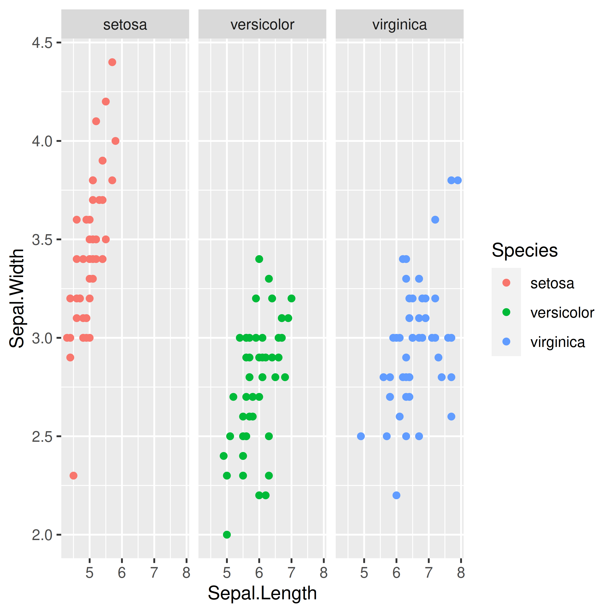
This doesn’t add anything more to the plot here since the colours are redundant. Later we will see a better example of this.
facet_grid() option that allows us to facet by more than one variable. Please see the Data Visualisation Cheat Sheet for more details.
1.3.7 Statistical transformations
Another feature of ggplot2 is that we can layer transformations over the top of our raw data. For example, there is a stat_smooth() function that allows us to overlay a smoothed non-parametric line to a scatterplot. For example:
ggplot(iris) +
geom_point(aes(x = Sepal.Length, y = Sepal.Width)) +
stat_smooth(aes(x = Sepal.Length, y = Sepal.Width))## `geom_smooth()` using method = 'loess' and formula = 'y ~ x'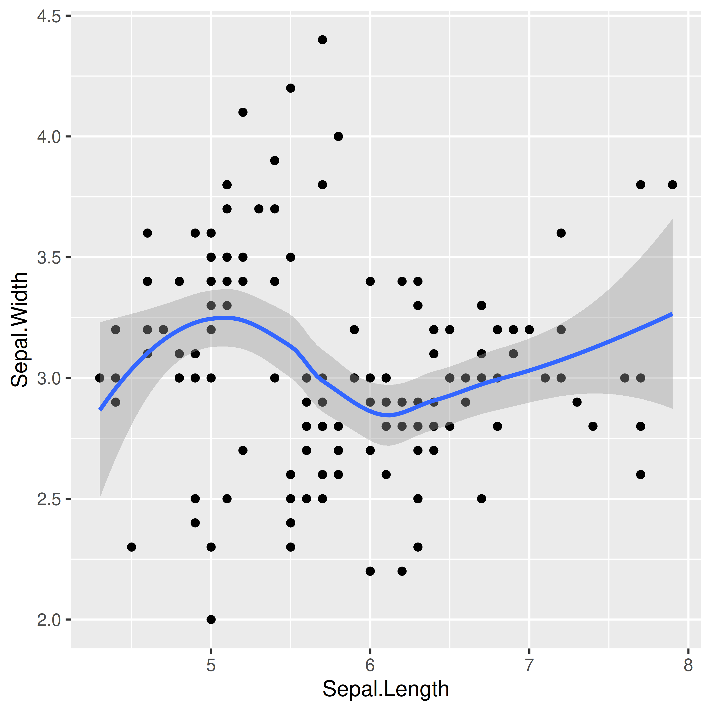
Notice that this has added a loess smoothed line to the plot2. We could instead add a linear line if we prefer, by setting a method argument to stat_smooth e.g.
ggplot(iris) +
geom_point(aes(x = Sepal.Length, y = Sepal.Width)) +
stat_smooth(aes(x = Sepal.Length, y = Sepal.Width), method = "lm")## `geom_smooth()` using formula = 'y ~ x'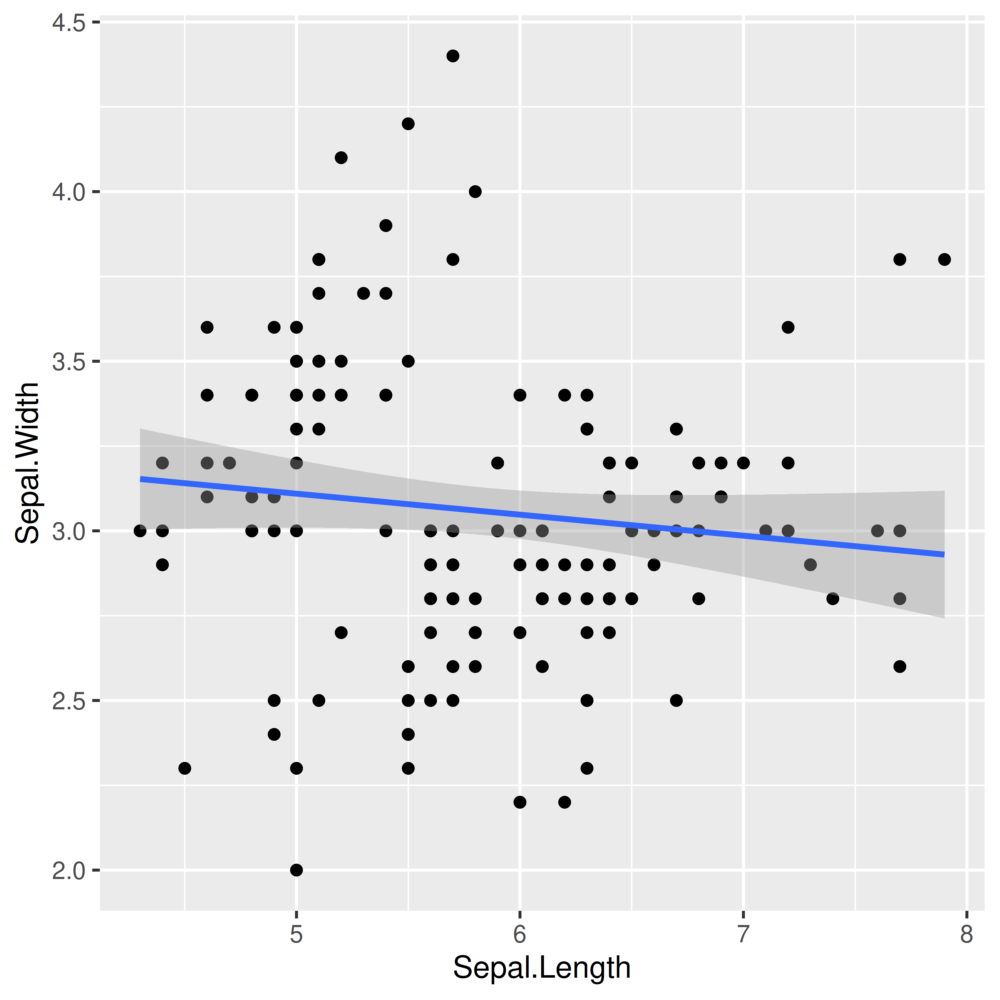
With the addition of a single function we can now add different lines for each species:
ggplot(iris) +
geom_point(aes(x = Sepal.Length, y = Sepal.Width)) +
stat_smooth(aes(x = Sepal.Length, y = Sepal.Width), method = "lm") +
facet_wrap(~ Species)## `geom_smooth()` using formula = 'y ~ x'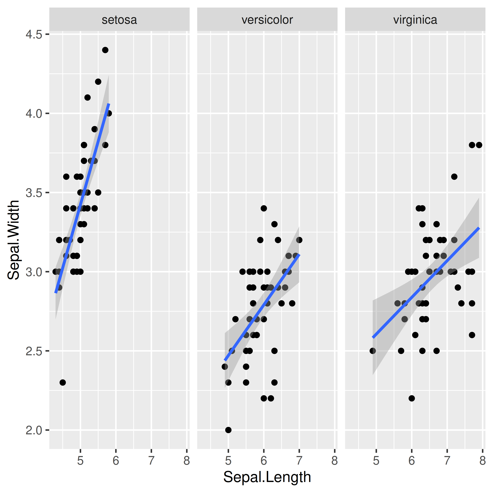
1.3.8 Aside: “global” vs. “local” options
Notice that in the code below the geom_point() and stat_smooth() functions use the same aesthetics. In this case it is possible to add “global” aesthetics to a plot through the ggplot2() function, which can then be accessed by sub-functions. Hence the following two pieces of code are equivalent here.
ggplot(iris) +
geom_point(aes(x = Sepal.Length, y = Sepal.Width)) +
stat_smooth(aes(x = Sepal.Length, y = Sepal.Width), method = "lm") +
facet_wrap(~ Species)ggplot(iris, aes(x = Sepal.Length, y = Sepal.Width)) +
geom_point() +
stat_smooth(method = "lm") +
facet_wrap(~ Species)Mixtures of “global” and “local” aesthetics can be used where necessary, which is particularly useful when layering information from different data sets onto the same plot.
1.3.9 Scales
Scales control the details of how data values are translated to visual properties. These allow us to control translations from data to aesthetics. We will see some simple examples of these in due course.
Some really useful colour palettes for categorical data in particular were designed by Cynthia Brewer and can be found through the colorbrewer website: https://colorbrewer2.org/. These provide a range of sequential, diverging and qualitative colour palettes, that can also be chosen to be colour-blind, print or photocopy friendly. ggplot2 offers a scales_*_brewer() function that enables you to use these palettes for your own plots. More information can be found here.
viridis package contains ggplot2 bindings for these palettes, and more information on these can be found here.
1.4 A more complex example: Gapminder
Let’s take these ideas and return to our Gapminder data. Datasets from the Gapminder project can be downloaded from https://www.gapminder.org/data. However, the particular data set required to replicate Figure 1.1 is available in a package in R called (naturally) gapminder. If not already installed, then this can be installed in the usual way.
Firstly, load the package:
Have a quick look at the data, which are available as an object called gapminder:
## # A tibble: 1,704 × 6
## country continent year lifeExp pop gdpPercap
## <fct> <fct> <int> <dbl> <int> <dbl>
## 1 Afghanistan Asia 1952 28.8 8425333 779.
## 2 Afghanistan Asia 1957 30.3 9240934 821.
## 3 Afghanistan Asia 1962 32.0 10267083 853.
## 4 Afghanistan Asia 1967 34.0 11537966 836.
## 5 Afghanistan Asia 1972 36.1 13079460 740.
## 6 Afghanistan Asia 1977 38.4 14880372 786.
## 7 Afghanistan Asia 1982 39.9 12881816 978.
## 8 Afghanistan Asia 1987 40.8 13867957 852.
## 9 Afghanistan Asia 1992 41.7 16317921 649.
## 10 Afghanistan Asia 1997 41.8 22227415 635.
## # ℹ 1,694 more rowsHere we can see that the data set consists of 1704 rows and 6 columns, and contains information on country, continent, life expectancy, population size, GDP (per capita) and year.
Any R aficionados amongst you might notice the slightly strange print behaviour of the gapminder object. If we try to print a data.frame object to the screen, then it usually prints the whole object. Here it’s printed an attenuated version of the object. This is because the gapminder data set is saved as a tibble object, rather than a standard data.frame.
tibble objects are simply enhanced data frames, which are generally easier to examine. For example, they force R to display only the data that fits onscreen. They also add some information about the class of each column. In fact, the tibble package—loaded as part of the tidyverse—introduces the as_tibble() function to convert ordinary data.frame objects to tibble objects, in case you want to use this functionality in future. Please see the Data Import Cheat Sheet for more information.
Note also that tibble objects seem to make a distinction between integers (<int>) and doubles (<dbl>), instead of just using numeric. R makes no such distinction in practice, and so you can think of either of these as simply numeric types.
tibbles more generally in the later data wrangling session.
Let’s just clarify the data:
country: country of interest (factor);continent: continent country can be found in (factor);year: year corresponding to data (in increments of 5 years) (numeric);lifeExp: life expectancy at birth (in years) (numeric);pop: population size (numeric);gdpPercap: GDP per capita, in dollars, by Purchasing Power Parities and adjusted for inflation (numeric).
1.4.1 GDP against life expectancy
Let’s think about Figure 1.1 and try to map the various aesthetics in the plot to our data set. We have:
| Aesthetic | Variable |
|---|---|
x |
gdpPercap |
y |
lifeExp |
colour |
continent |
size |
pop |
ggplot2, produce a scatterplot that uses the aesthetics in Table 1.1 for just the year 1952.
Notice how rich this plot is already. One thing to note is that in Figure 1.1 the \(x\)-axis is plotted on the \(\log_{10}\) scale. There are two ways in which we can handle this: either by transforming the gdpPercap variable directly, or by using an appropriate scales_* function. Here we want to apply a \(\log_{10}\) transformation to the x aesthetic.
- Redo the previous plot but with the aesthetic
x = log10(gdpPercap). - Redo the previous plot with the aesthetic
x = gdpPercapbut with an additionalscale_x_log10()layer.
ggplot2 also allows you to save the plot as an object, which can be updated at a later date or used within other functions. For example,
p <- ggplot(gapminder[gapminder$year == 1952, ],
aes(x = gdpPercap, y = lifeExp, size = pop, colour = continent)) +
geom_point()creates an object called p that contains the plot information. This will not be plotted until the object is printed to the screen e.g.
Note: If using ggplot inside functions you may have to explicitly use the print() function (e.g. print(p)).
This can be useful if we want to add things to an existing plot at a later stage without having to rewrite the entire plot. For example, to set the scales on plot p we can do:
ggplot2 has lots of built in transformations e.g. "log", "exp", "sqrt", "log10" and so on. Or you can define your own. Notice that we have not transformed the data, we have merely told ggplot() on what scale to plot it. This sorts out the axis tick labelling automatically.
We can also scale other aesthetics. For example, although the relative areas of the points are scaled nicely, we probably want the largest points to be slightly larger. Hence we can scale the area of the maximum point by using the scale_size_area() function:
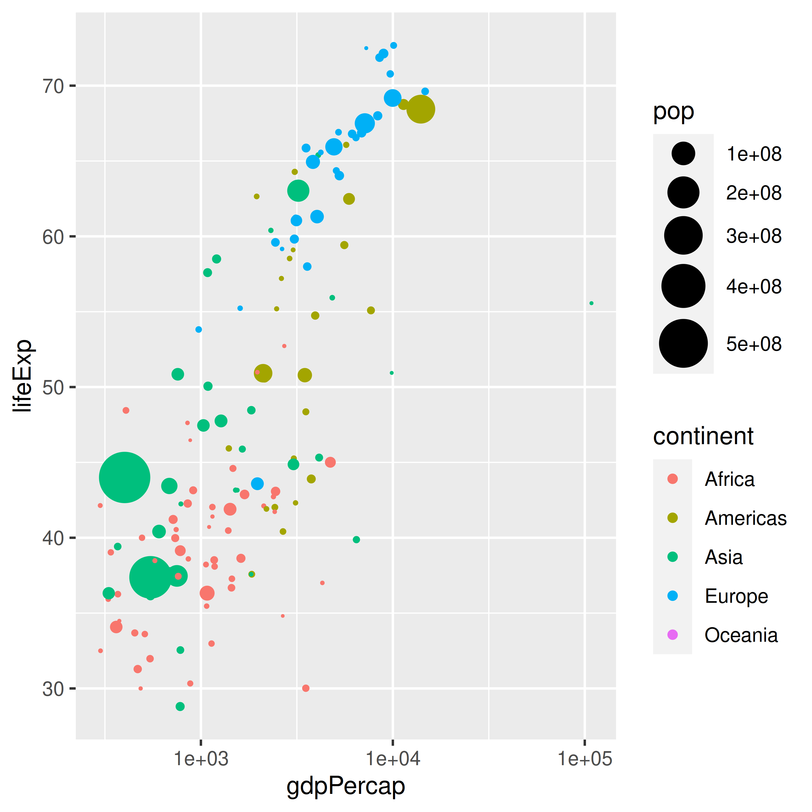
Again, labels and titles can be added fairly easily, using the xlab(), ylab() and ggtitle() functions:
p <- p + xlab("log10(GDP per capita)") +
ylab("Life expectancy at birth (years)") +
ggtitle("1952")
p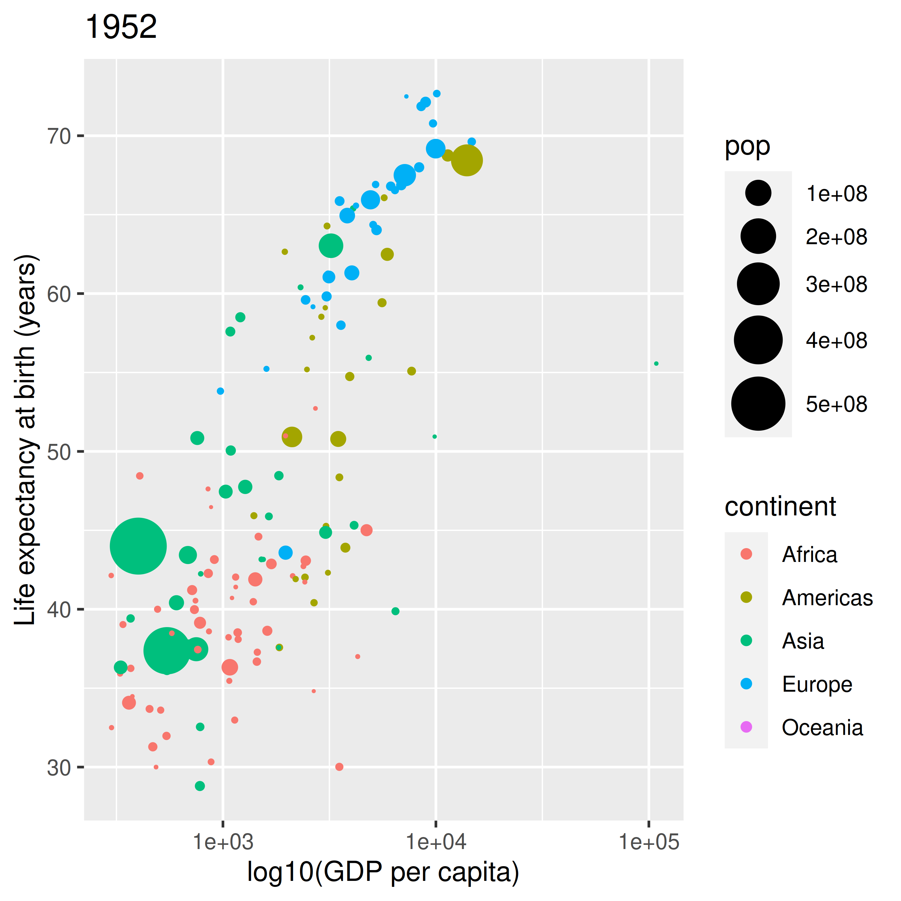
Changing the legend titles can also be done using the labs() option. Notice that the legends map to the aesthetics, so there is a colour legend that maps to the colour aesthetic, and a size legend that maps to the size aesthetic.)
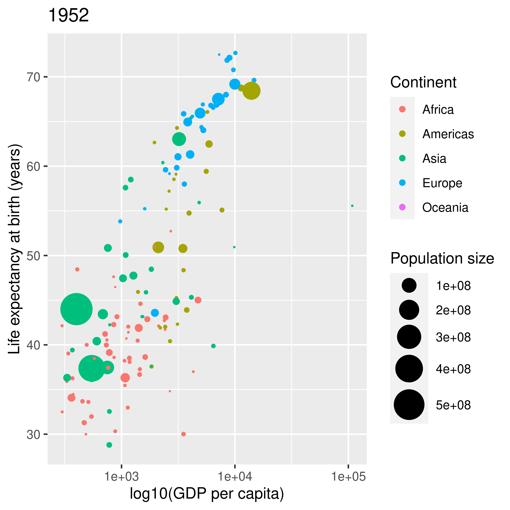
Not bad. Finally notice that by default ggplot2 uses a light-grey background. This seems to prove somewhat divisive. There is a solid theory behind choosing this as the default, since it provides clarity without having too much contrast. However, some people don’t like it, and so there are options to turn this off (using theme()). In this case we can simply turn this off using theme_bw() (a black-and-white theme).
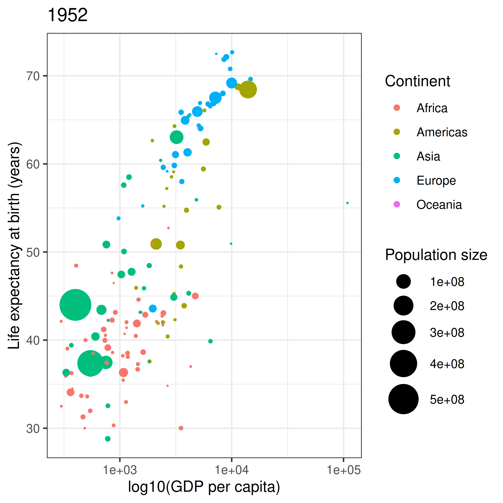
There are many, many possible options with ggplot2. Far too many to cover here. We can only really get a flavour of what can be achieved. I have often found Google to be invaluable for learning ggplot2.
Let’s have a look at a couple of other examples.
1.4.2 GDP per continent
Another chart that Professor Rosling used in an associated TED talk was a stacked density plot. This is a smoothed version of a histogram. Let’s start by looking at the distribution of GPD values across all countries in 1952. This can be done with the geom_density() geom as in the earlier example, which requires only an x aesthetic—see ?geom_density—since it calculates the density on the \(y\)-axis automatically from the data once we have chosen an appropriate bandwidth.
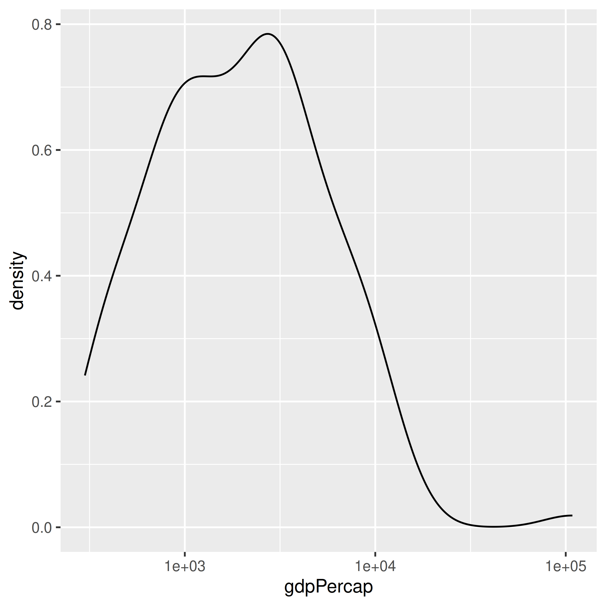
This simple plot is producing a density plot of the distribution of GDP across all countries in 1952. How do split this by continent? Well, there are various ways. One way would be to set the fill aesthetic to map to the continent variable:
ggplot(gapminder[gapminder$year == 1952, ],
aes(x = gdpPercap, fill = continent)) +
geom_density() +
scale_x_log10()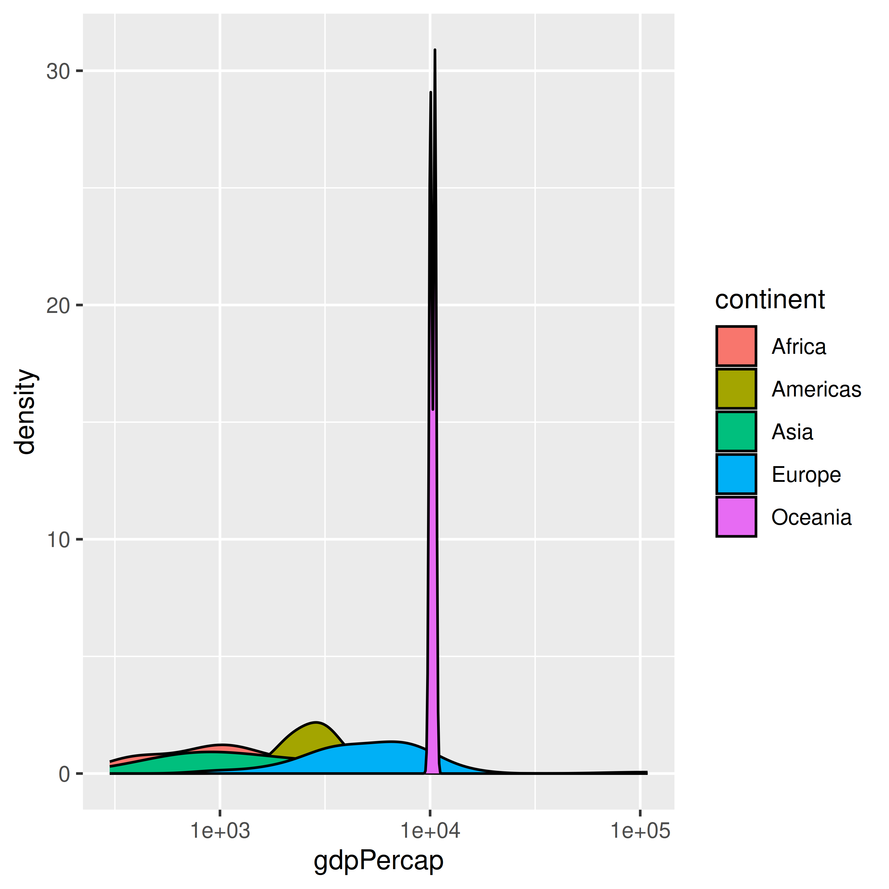
This produces an overlapped density plot by default. (The patterns are quite difficult to see here, due to the Oceania data, so for the purposes of exposition only we’re going to remove Oceania from the subsequent plots.)
## remove Oceania (for exposition purposes only)
gapminderNoOc <- gapminder[gapminder$continent != "Oceania", ]
## produce overlapped density plot
ggplot(gapminderNoOc[gapminderNoOc$year == 1952, ],
aes(x = gdpPercap, fill = continent)) +
geom_density(alpha = 0.5) +
scale_x_log10()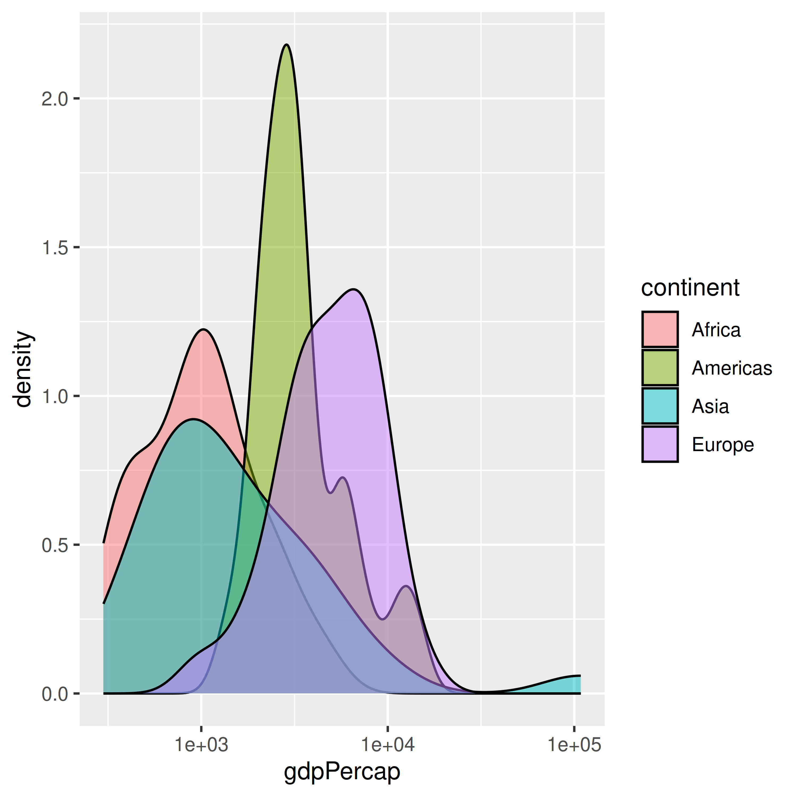
This is an informative plot. We can see that African countries tend to have lower GDP per capita than the Americas for example; with Asia and Africa the poorest continents in the 1950s in terms of GDP.
Oceania density plot tell us about the range of GDPs in the Oceania continent?
1.4.2.1 Positions
Professor Rosling uses a stacked density plot, rather than overlapping density plots. We can use a position = "stack" argument to the geom to force the stacking.
## produce stacked density plot
ggplot(gapminderNoOc[gapminderNoOc$year == 1952, ],
aes(x = gdpPercap, fill = continent)) +
geom_density(position = "stack") +
scale_x_log10() 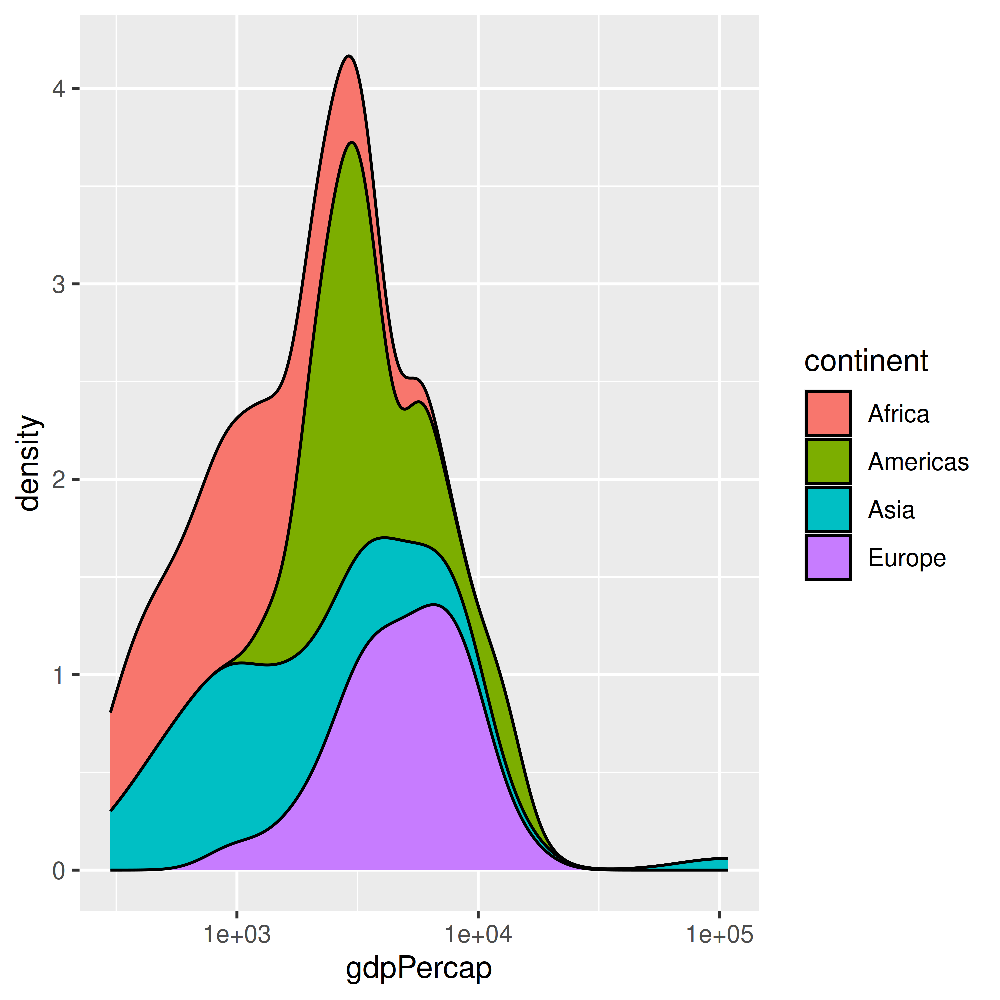
Histograms and barplots have equivalent position = "dodge" and position = "stack" commands. By default histograms use the latter. The former is not very useful for histograms, but very useful for barplots with multiple discrete groupings.
data and a year argument and plots a stacked density plot for a given year. Use this to plot the data for 1952, 1982, 1992 and 2002. (Remember that if you want to plot a ggplot2 figure from inside a function, you will have to call print() explicitly.)
log10(gdpPercap) faceted by continent, for the year 1952.
1.5 Saving plots
To save plots you can use the ggsave() function. This allows you to write out your file to a range of formats, and specify size, resolution etc. as required e.g.
## produce lovely plot
p <- ggplot(gapminderNoOc,
aes(x = gdpPercap, fill = continent)) +
geom_density(position = "stack") +
scale_x_log10() +
facet_wrap(~year)
## save plot as PDF
ggsave("myplot.pdf", p)Take a look at the help file ?ggsave for more details.
1.6 Additional task
Let’s look at some data from an experiment exploring the effect of sexual activity on lifespan of male fruitflies, described in Partridge and Farquhar (1981).
A cost of increased reproduction in terms of reduced longevity has been shown for female fruitflies, but not for males. We have data from an experiment that used a factorial design to assess whether increased sexual activity affected the lifespan of male fruitflies.
The flies used were an outbred stock. Sexual activity was manipulated by supplying individual males with one or eight receptive virgin females per day. The longevity of these males was compared with that of two control types. The first control consisted of two sets of individual males kept with one or eight newly inseminated females. Newly inseminated females will not usually re-mate for at least two days, and thus served as a control for any effect of competition with the male for food or space. The second control was a set of individual males kept with no females. There were 25 males in each of the five groups, which were treated identically in number of anaesthetisations (using \(\mathrm{CO}_2\)) and provision of fresh food medium.
The data should have the following columns:
- id: a ID for each fly in each group (1–25).
- partners: number of companions (0, 1 or 8).
- type: type of companion (inseminated female; virgin female; not applicable (when ‘partners = 0’)).
- longevity: lifespan, in days.
- thorax: length of thorax, in mm.
Source: Partridge and Farquhar (1981)
1.7 Additional functionality: going beyond static plots
There has been a whole ecosystem of packages that have evolved from the core tidyverse. One such package is gganimate, which, as the name suggests, allows one to turn ggplot2 plots into animations.
The website for the package can be found here. We will not give a full demonstration here, but instead show how we can produce an animation similar to that of Professor Rosling’s, with the addition of two more lines of code.
Firstly, you will need to install gganimate, and you might also have to install the gifski and av packages in order to write out the animation into a .gif or other video file. Then:
## load library
library(gganimate)
## produce plot (ignoring year)
p <- ggplot(gapminder,
aes(x = gdpPercap, y = lifeExp, size = pop, colour = continent)) +
geom_point() +
scale_x_log10() +
scale_size_area(max_size = 10) +
xlab("log10(GDP per capita)") +
ylab("Life expectancy at birth (years)") +
labs(colour = "Continent", size = "Population size") +
theme_bw()
## turn into animation, using year to guide transitions
p <- p + transition_time(year) +
ggtitle("{frame_time}")
p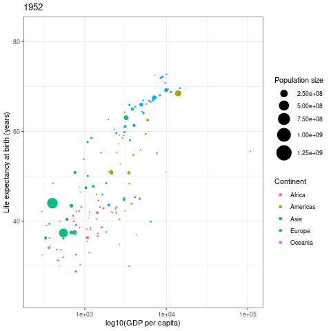
Neat eh? To save animations, once can use the anim_save(), similarly to the ggsave() function we saw earlier.
## save as gif (renders to gif by default)
anim_save("gapminder.gif", p)
## save to mp4 (needs new renderer argument)
anim_save("gapminder.mp4", animate(p, renderer = av_renderer()))Take a look at the gganimate website for more examples and ideas.
Another useful package is plotly, which allows you to generate interactive plots from data (if you are viewing the HTML note, then try interacting with the plot below). There is even a useful ggplotly() function to automatically turn ggplot2 figures into plotly figures.
## load library
library(plotly)
## produce plot from 1952
p <- ggplot(filter(gapminder, year == 1952),
aes(x = gdpPercap, y = lifeExp, size = pop, colour = continent)) +
geom_point() +
scale_x_log10() +
scale_size_area(max_size = 10) +
xlab("log10(GDP per capita)") +
ylab("Life expectancy at birth (years)") +
guides(size = "none") +
labs(colour = "Continent") +
ggtitle("1952") +
theme_bw()plotly is much more flexible than just converting ggplot2 figures, and is not restricted to R (you can also use it as a standalone package, or through e.g. Python, Julia or MatLab as well)—see https://plotly.com/graphing-libraries/ for more details. It is also being actively developed, which is why it still has a few teething problems, such as an inability to handle multiple legends currently, which is why I had to turn the size legend off using the function guides(size = "none") in the above code. Hopefully future updates will fix this, but it gives you an idea about what’s possible.
Another awesome package is shiny, which enables you to create interactive webpages directly from R. We will not cover shiny in this module, but please take a look at the gallery for lots of ideas and examples in case you are interested.